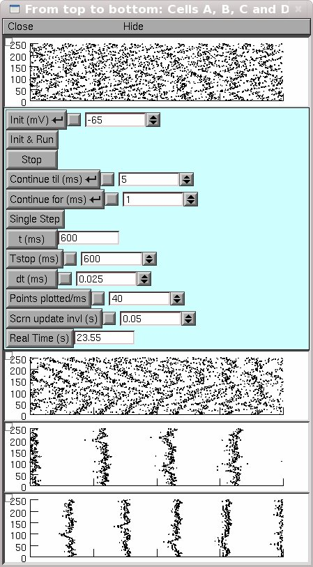
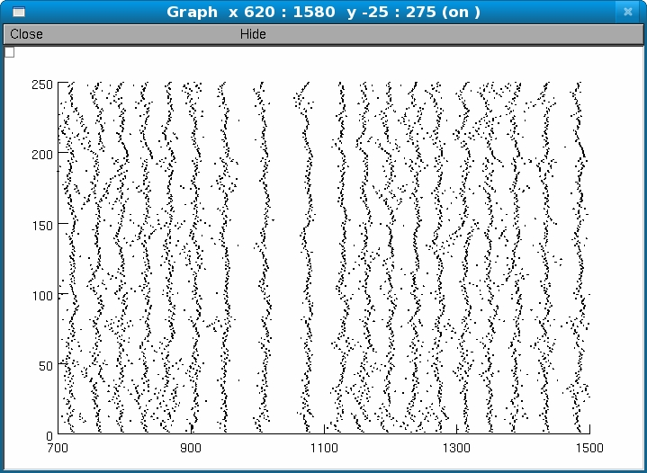

Small world networks of model neurons from the paper Andrew Bogaard, Jack Parent, Michal Zochowski, and Victoria Booth Interaction of Cellular and Network Mechanisms in Spatiotemporal Pattern Formation in Neuronal Networks J. Neurosci. 29: 1677-1687; doi:10.1523/JNEUROSCI.5218-08.2009 Implemented with NEURON 5.9, four model neurons with varying excitability properties affect the spatiotemporal patterning of small world networks of homogeneous and heterogeneous cell population. Usage: Either autolaunch from ModelDB after NEURON is installed or 1. Unzip bogaard2009.zip into an empty directory 2. Compile mod files 3. Double click on either homrun.hoc or hetrun.hoc to run homogeneous or heterogeneous networks, respectively. Each should finish in a matter of minutes (25 secs on a 2.4 MHz dual intel P8600), depending on computer speed. homrun.hoc will generate  and hetrun.hoc will generate  How to Compile Mod Files unix: use command nrnivmodl windows: run mknrndll.hoc and follow instructions homrun.hoc Print to screen raster plots depicting differing activity of four homogeneous networks with different cell composition for same network parameters. hetrun.hoc Print to screen raster plot of switching activity similar to that in Fig 8.E modelspecs.hoc Model neuron templates homrig.hoc Homogeneous network source code hetrig.hoc Heterogeneous network source code Questions on how to use this model should be directed to abogaard@umich.edu Discrepancies in publication/supplemental material: I_Kdr gating variable is described as n^4, but is n (to the first power) in the model. Dendrite radius is given as 12um, but the diameter is 12um in the model. I_Na gating variable m time constant is given as .2ms, but is .02 in the model. The K_A equation which reads (1 + exp(V + 40)/5))^-1 is missing a parenthesis and should read (1 + exp((V + 40)/5))^-1. g_Ih for cells A and B are switched in Table 1. g_IKdr for cell A is given as .2S/cm^2 but is .1 in the model. Figure 1 indicates indicates unit mA, which should be nA.